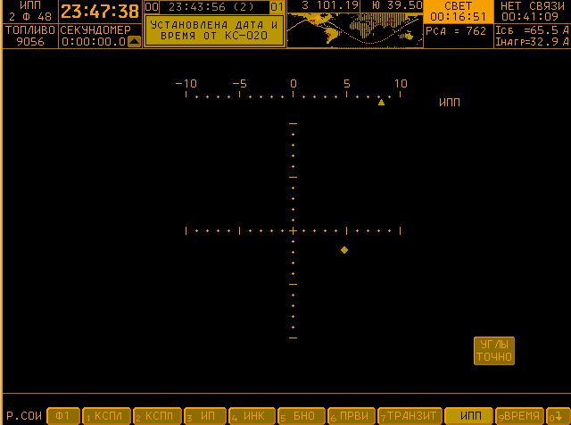

via kremlint:
i got the russian spacecraft simulator working
More information http://4archive.org/g/res/42590842
“Spacecrafts use software to provide an interface to the astronauts. There’s a training version of this very software which simulates a flight. It’s what you see in the OP pic. It looks like some 1337 haX0r software since it’s been develeoped in the 60ies until at least 2002.”
You can definitely use this software if you read through the posts in that link - I think they have a copy of the software available for download. You can run it using DOSBox. It’s very interesting, and very confusing, trying to figure out what the hell you’re doing the whole time.